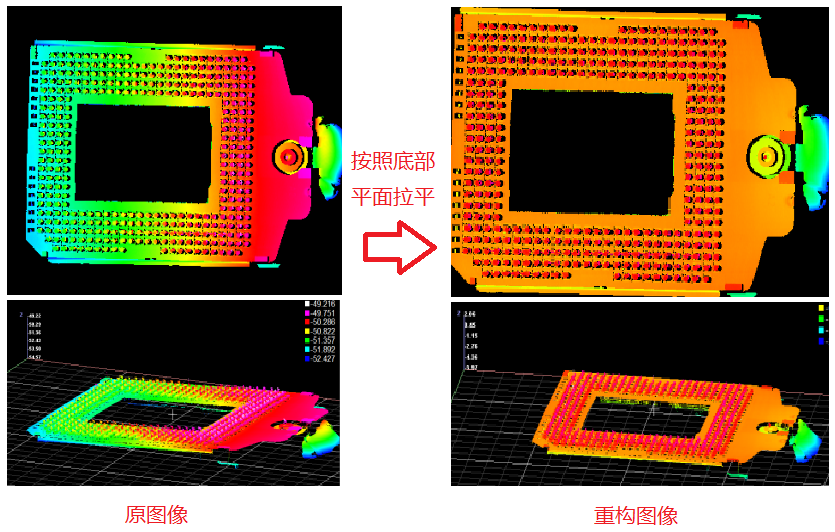

深度图像重构工具支持“投影平面”和“指定变换”两种模式。
“投影平面”模式为由用户指定投影基平面，重构工具将指定的基平面校正至XOY面，重构后的深度图像中，指定平面校正为水平面，目标物体的Z值即为到平面的高度，如下图所示：
“指定变换”模式为将深度图表征的点云信息经指定变换后重新投影至XOY平面，形成新的深度图像，如下图所示：
相机扫描过程中，产品不一定处于平面方向，因此对测量模块产生精度偏差，或无法统一测量，因此需要在测量之前将产品进行水平处理，使所有图像中的产品处于同一个平面，因此可以进行统一测量。

深度图像重构工具有投影平面和指定变换两种模式。“投影平面”模式为由用户指定投影基平面，重构工具将指定的基平面校正至XOY面，首先根据平面法向量与Z轴获取刚体变换矩阵，对原深度数据表征的点云作刚体变换，然后将变换后的点云重新映射构建新的深度图像，重构后的深度图像中，指定平面校正为水平面，目标物体的Z值即为到平面的高度。“指定变换”模式为将原深度图表征的点云信息经过指定变换后重新投影至XOY平面，形成新的深度图像。
拟合投影平面
投影平面的拟合请参考平面拟合、平面拟合2、局外点平面拟合等平面拟合工具操作说明手册。
无
| 参数名称 | 参数说明 |
|---|---|
| 启用ROI | 选择“是”，则使用矩形ROI。 |
| 矩形ROI | 启用ROI参数选择是时有效，用户使用矩形ROI指定重构区域。 |
| 重构模式 | 投影平面模式：将深度图像中的所有点，重新投影到指定的平面上，形成新的深度图像；指定变换模式：将深度图像中的所有点，按指定变换形成变换后的深度图像；局部补偿模式：将仿射矩形ROI中的点集根据相对应的补偿值进行局部Z向补偿，并输出补偿后的结果图像； |
| 分辨率设置模式 | 选择手动/自动设置分辨率模式，手动模式下可以输入Z向分辨率 |
| Z向分辨率 | 深度图中显示的物理高度范围有限，Z向分辨率就可以控制显示的高度范围。分辨率数值越大，显示的物理值范围越大，但是细节容易丢失，分辨率数值越小，显示物理值范围越小，细节可以突显。 |
| 开启并行运算 | 是否开启并行运算，选择是时，算法将开启OpenMp并行计算方式，可以提升计算速度，但可能出现耗时不稳定的情况，选择否时，算法将关闭OpenMp并行计算。 |
| 线程数百分比 | 设置并行运算的线程数百分比，有效范围为 (0, 0.75]，对应表示(0%, 75%]百分比范围。 |
| 输入深度图像（数据链） | 输入待重构的深度图像。 |
| 二维线性变换（数据链） | 目标相对于模板的平移、旋转、缩放变换。 |
| 投影平面（数据链） | 即重构时进行投影的平面。当重构模式为投影平面时开启。 |
| 局部补偿数组（数据链） | 每个仿射矩形ROI中点集的Z向补偿值组合成的数组。当重构模式为局部补偿时开启。 |
| 绕x/y/z轴旋转角度 | 分辨控制变换之后的图像相对于原图在x/y/z轴上旋转的角度，参数范围[-360,360],单位：度（°） |
| 多仿射矩形ROI | Center：矩形中心坐标， Size：长和宽， Rotation:旋转角度， Skew：切变角度 |
| 参数名称 | 参数说明 |
|---|---|
| 输出深度图像 | 输出的重构后的深度图像 |
| 执行结果 | 工具执行结果 |
| 执行时间 | 工具执行时间 |
参见“\Samples\3D\深度图\深度图像重构工具.gvp”。